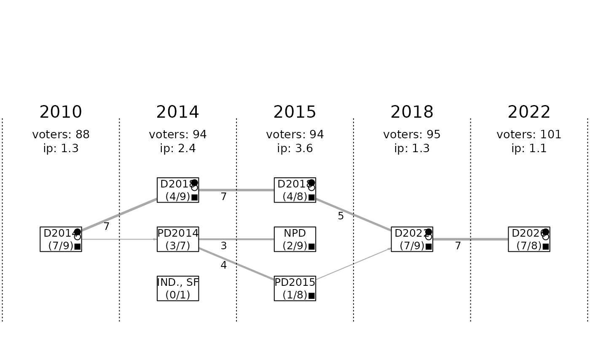

A dataset containing individual-level candidacy records from municipal elections in the municipality of Doubice (district Decin, Czech Republic).
Source
The dataset was compiled primarily from official election results published by the Czech Statistical Office. Additional contextual or verification information (such as post-election roles) was obtained from publicly available municipal records and interviews with local political representatives.
Bubenicek, V. (2009). Doubice. In Cmejrek, J. et al., Participace obcanu na verejnem zivote venkovskych obci CR (Citizens' Participation in the Public Life of Rural Municipalities in the Czech Republic). Prague: Kernberg Publishing.
Details
| Dataset overview: | |
| Municipality: | Doubice |
| District: | Decin |
| Country: | Czech Republic |
| Number of elections: | 11 |
| Elections covered: | 1993, 1994, 1998, 2002, 2006, 2007, 2010, 2014, 2015, 2018, 2022 |
| Number of candidacies (rows): | 151 |
| Note: | Municipality website |
Description of variables
| Variable | Description |
| elections | Election identifiers (numeric) |
| candidate | Candidate's full name (character) |
| list_name | Name of the candidate list (character) |
| list_pos | Candidate's position on the list (numeric) |
| pref_votes | Number of preferential votes (numeric) |
| elected | Logical; TRUE if candidate was elected |
| nom_party | Nominating party (character) |
| pol_affil | Political affiliation (character) |
| mayor | TRUE if elected mayor |
| dep_mayor | TRUE if elected deputy mayor |
| board | TRUE if member of the executive board |
| gov_support | TRUE if supported the local government |
| elig_voters | Number of eligible voters (numeric) |
| ballots_cast | Number of ballots cast (numeric) |
Each record describes one candidate's run for office, including their candidate list affiliation, position on the list, nominating party, political affiliation, number of preferential votes, and whether they were elected or held specific positions (mayor, deputy mayor, member of the executive body).
The dataset also includes contextual election-level information, such as the number of eligible voters and ballots cast, which can be used to calculate voter turnout and related indicators. These variables appear only once per election and constituency (they may be stored in a single candidate row for that election/constituency)
References
Bubenicek, V. (2010). Lokalni modely demokracie v malych obcich CR (Local Models of Democracy in Small Municipalities). Dissertation thesis. Czech University of Life Sciences Prague. [Full text]
Bubenicek, V., & Kubalek, M. (2010). Konfliktni linie v malych obcich (Cleavages in Small Municipalities). Acta Politologica, 2(3), 30-45. [Full text]
Cmejrek, J., Bubenicek, V., & Copik, J. (2010). Demokracie v lokalnim politickem prostoru (Democracy in Local Political Area). Prague: Grada. [Publisher link]
Cmejrek, J. et al. (2009). Participace obcanu na verejnem zivote venkovskych obci CR (Citizens' Participation in the Public Life of Rural Municipalities in the Czech Republic). Prague: Kernberg Publishing. [ResearchGate]
Bubenicek, V., Copik, J., Hajny, P., Kopriva, R., & Neumanova, T. (Eds.) (2005). Obce jako akteri politickeho procesu: komunitni studie regionalnich politickych systemu a problematika metodiky jejich zpracovani (Municipalities as Actors of the Political Process: Case Studies of Regional Political Systems and Methodology of Their Elaboration). Prague: FEM CZU Prague. [ResearchGate]
Examples
# Basic inspection
str(Doubice_DC_cz)
#> 'data.frame': 151 obs. of 14 variables:
#> $ elections : int 1993 1993 1993 1993 1993 1993 1993 1993 1993 1994 ...
#> $ candidate : chr "Lipman Rudolf (1)" "Stejskalová Božena" "Malík Ivo" "Bechyně Ivo" ...
#> $ list_name : chr "SNK" "SNK" "SNK" "SNK" ...
#> $ list_pos : int 1 2 3 4 5 6 7 8 9 1 ...
#> $ pref_votes : int 33 33 32 31 31 31 31 30 29 39 ...
#> $ elected : int 1 1 1 1 1 1 1 1 1 1 ...
#> $ nom_party : chr "NK" "NK" "NK" "NK" ...
#> $ pol_affil : chr "BEZPP" "BEZPP" "BEZPP" "BEZPP" ...
#> $ mayor : int 0 1 0 0 0 0 0 0 0 1 ...
#> $ dep_mayor : int 0 0 0 0 0 0 0 0 0 0 ...
#> $ board : int 0 0 0 0 0 0 0 0 0 0 ...
#> $ gov_support : int 1 1 1 1 1 1 1 1 1 1 ...
#> $ elig_voters : int 44 NA NA NA NA NA NA NA NA 57 ...
#> $ ballots_cast: int 36 NA NA NA NA NA NA NA NA 51 ...
# Example of a basic continuity diagram (unformatted version)
plot_continuity(Doubice_DC_cz, elections = "2010-")
